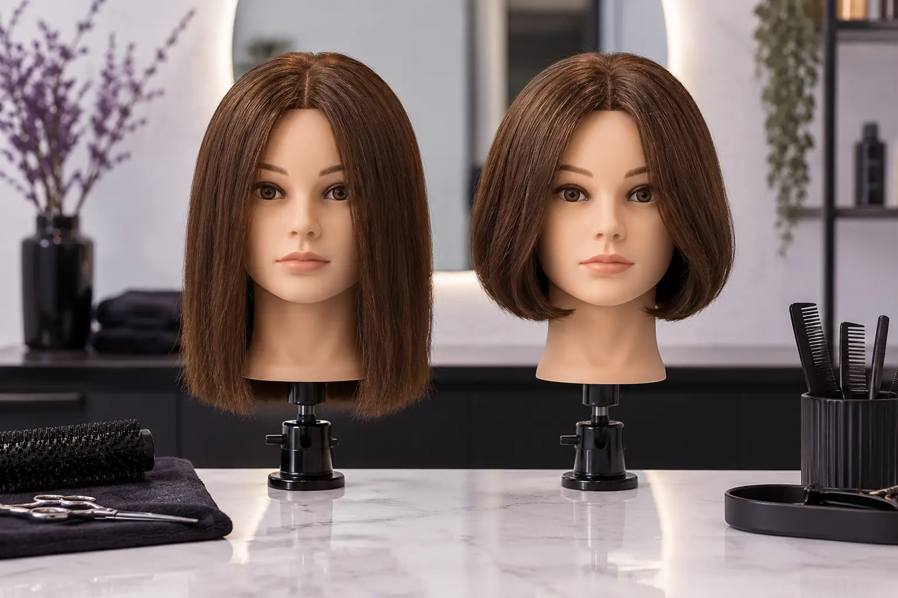

Galiukų pakirpimas ar nauja kirpimo forma: skirtingos užduotys
Autorius: Madbeauty redakcija · Numatyta 2026 m. spalio 19 d. 10:00 (Lietuvos laiku)
Sužinokite, kaip prieš vizitą apibrėžti norimą išlaikyti siluetą ar keisti ilgį ir kontūrą, ir ką aptarti dėl paslaugos apimties.

Galiukų pakirpimas ir nauja kirpimo forma apibūdina skirtingus norimus rezultatus: vienu atveju siekiama išlaikyti dabartinį siluetą, kitu – jį pakeisti, pavyzdžiui, trumpinti ilgį ar keisti kontūrą. Pavadinimai meniu gali skirtis, todėl prieš vizitą svarbiausia aiškiai sutarti, kas turi likti ir kas keistis.
Išlaikoma forma
Jei dabartinė forma tinka, o norite tik tvarkingesnių galiukų, pasakykite tai tiesiai. Nurodykite, ar norite išlaikyti bendrą ilgį, kontūrą ir įprastą nešiojimo būdą. Jei nenorite reikšmingo pokyčio, įvardykite ir šią ribą. Tai padeda aptarti užduotį prieš pradedant darbą, bet pats paslaugos pavadinimas nenustato, kiek plaukų bus kerpama.
Ilgio ir svorio pokytis
Jei norite pakeisti siluetą, parodykite, kur norėtumėte naujo ilgio ar kontūro. Įkvėpimo nuotrauka gali padėti aptarti norimą kryptį, tačiau verta atskirai pasakyti, ką iš pavyzdžio norite perkelti į savo kirpimą. Taip pat nusakykite, kiek laiko paprastai skiriate kasdieniam formavimui. Meistras gali įvertinti, kaip šie pageidavimai dera su jūsų plaukais ir dabartiniu kirpimu; vien nuotrauka ar paslaugos pavadinimas to neatsako.
Du užduoties pavyzdžiai
- Išlaikyti formą: „Noriu išsaugoti dabartinį siluetą. Aptarkime, ką reikėtų pakirpti, kad rezultatas liktų panašus į dabartinį.“
- Keisti formą: „Noriu trumpesnio, aiškesnio kontūro. Štai nuotrauka, kurioje patinka ilgis; aptarkime, ką iš jos galima pritaikyti mano plaukams.“
Tai pavyzdinės užduotys, o ne konkretaus kliento rezultatai ar garantija, kaip atrodys kirpimas. Jei dar nesate apsisprendę, pirmiausia pasirinkite, ar pokytis svarbiausias ties ilgiu, kontūru, ar norite išsaugoti dabartinę formą.
Paslaugos apimtis
Paslaugos pavadinimas ir į vizitą įtraukti darbai nėra tas pats. Vieno teikėjo meniu, peržiūrėtame 2026 m. spalio 7 d., atskirai pateikiami galiukų kirpimo, kirpimo su galvos plovimu, kirpimo su sušukavimu ir kirpimo žirklėmis ar mašinėle variantai: Žirmūnų 22 plaukų paslaugų meniu. Tai vieno salono pavyzdys, ne visų teikėjų taisyklė. Prieš užsakydami patikrinkite, ar nurodytas tik kirpimas, ar įtraukti ir plovimas, džiovinimas arba sušukavimas, ir kaip paslaugą galima keisti, jei norimas rezultatas kitoks.
Trumpa užduotis prieš vizitą
- Pasakykite, ar norite išlaikyti esamą formą, ar ją keisti.
- Įvardykite, kas turėtų likti ir kas gali pasikeisti: ilgis, kontūras ar bendras siluetas.
- Jei rodote nuotrauką, pasakykite, kuri jos detalė jums svarbi.
- Patikrinkite, kokie darbai įtraukti į pasirinktą paslaugą.
Jei norite peržiūrėti nacionalinį „Galiukų kirpimas“ pasirinkimą, atverkite paslaugos pasirinkimą ir pasirinkite miestą. Katalogo pasirinkimas savaime nepatvirtina, kad tame mieste yra teikėjų ar laisvų laikų.
Planuojamos vidinės nuorodos
Šaltiniai peržiūrai
- Žirmūnų 22 · plaukų paslaugų meniu — Perskaitytas šio teikėjo meniu: galiukų kirpimas, kirpimas su galvos plovimu, kirpimas su sušukavimu, atskiri mašinėlės ir žirklių variantai. Tik vieno salonų meniu pavyzdys, ne mūsų pasiūla, nacionalinės kainos ar universalūs laikai; konkrečių kainų į tekstą neperkelti.
- Hair consultation: goals, reference pictures and maintenance — Read original consultation advice: discuss own goals, use reference pictures as dialogue starter, consider texture and maintenance. Brand educational material, not a review of our article or a result guarantee. Max 15 derived words per article, max 200 combined.